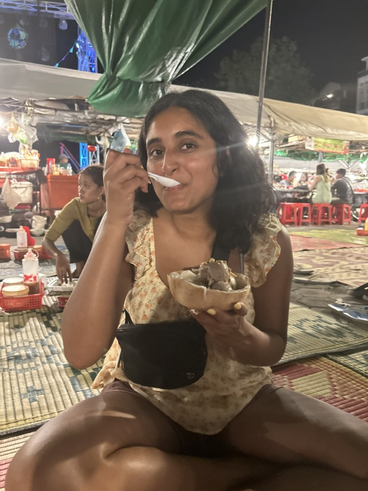

Hello! My name is Esha Parikh. I am a third year Honors student at Northeastern University, studying Business and Data Science with a concentration in Finance.
I was born and raised in Kansas. Growing up, I have always had a passion for travel. Fortunately, I have been able to travel throughout my life, whether with my family, friends, or college. I believe travel has been a key factor in my own personal development and growth. It has given me a global perspective and made me more independent. I don't limit travel to international trips, instead I think it's going anywhere outside of where you live. As someone from the Midwest, coming to Boston for college was a huge change for me. One of my friends even said it was almost similar to going to different country. And this is true to an extent as I did experience culture shock, similar to how one would in a new country.
I am grateful that I have been given the opportunity to explore different countries and states in the United States. Internationally, I've been to Mexico (Cancun, Cabo, Playa del Carmen, San Pancho), Dominican Republic, Costa Rica, Vietnam (Hanoi), Cambodia (Siem Reap, Kep, Phenom Penh), Singapore, France (Paris), and Spain (Madrid), India (Ahmedabad, Mumbai, Udaipur), Dubai, Italy (Rome, Ravello, Trastevere), Greece (Athens, Mykonos, Santorini). And I am currently planning my next trip to Japan!
Happiest when I am eating food in a new country!